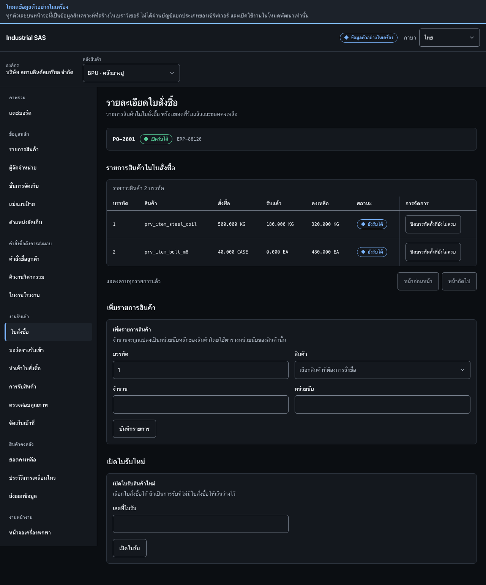

เพิ่มรายการสินค้าและเปิดใบรับสินค้าAdd order lines and open a receipt
เพิ่มบรรทัดสินค้าในใบสั่งซื้อ ตรวจยอดสั่งซื้อกับยอดที่รับแล้ว แล้วเปิดใบรับสินค้าAdd item lines to a purchase order, check ordered against received, then open a receipt.
สิ่งที่ต้องมีก่อนเริ่มBefore you start
- มีใบสั่งซื้อที่เปิดอยู่An open purchase order exists
- สินค้าที่จะสั่งซื้อมีอยู่ในทะเบียนข้อมูลสินค้าแล้วEvery item to be ordered already exists in the item register

ขั้นตอนSteps
- ที่กรอบ 1 กรอกหมายเลขบรรทัด เลือกสินค้า กรอกจำนวนและหน่วยนับ แล้วกด “บันทึกรายการ”In box 1, enter the line number, choose the item, enter the quantity and unit of measure, then press “Save line”.
- ตรวจสอบยอด “สั่งซื้อ / รับแล้ว / คงเหลือ” ในตารางด้านบนCheck the “Ordered / Received / Remaining” figures in the table above.
- ที่กรอบ 3 กรอกเลขที่ใบรับ แล้วกด “เปิดใบรับ”In box 3, enter the receipt number, then press “Open receipt”.
ตรวจว่างานสำเร็จอย่างไรHow to tell it worked
- บรรทัดสินค้ามีสถานะ “ยังรับได้”The order line shows status “Receivable”.
- ใบรับใหม่ปรากฏในหน้าการรับสินค้าThe new receipt appears on the receiving screen.